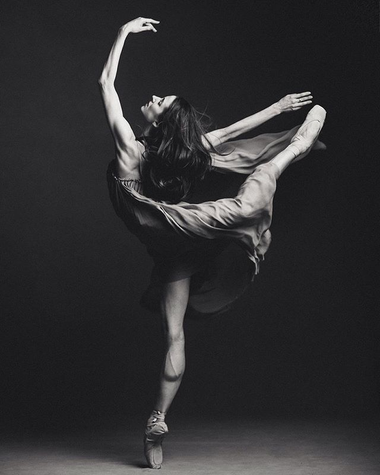

Танцевальная студия "DANCE" была открыта в 2018 году.
За 5 лет существования мы получили огромный опыт в области хореографии,который применяем в своей
работе.
Наши воспитанники занимаются не только танцами, но и вокалом, актерским мастерством,спортом, и
конечно же, развитием своей личности.
Студия не имеет возрастных ограничений для обучения.
Мы работаем для детей и подростков, людей среднего возраста, а также для тех, кто уже давно не
танцует.
В студии работают только профессиональные педагоги.
Танец это искусство, которое позволяет людям выразить себя, свою индивидуальность,
свои эмоции и чувства.
Выступая в паре, вы можете показать свою красоту, чувство ритма, грацию и грациозность.
Это искусство требует большой практики и подготовки, но вы не пожалеете о
потраченном времени, когда увидите себя на сцене.
Танец - это не только искусство, это еще и средство для общения людей.
В каждом танце есть свой смысл, который мы будем пытаться разгадать.
